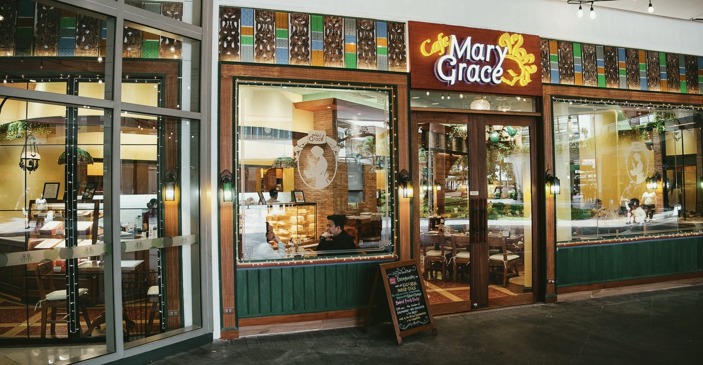
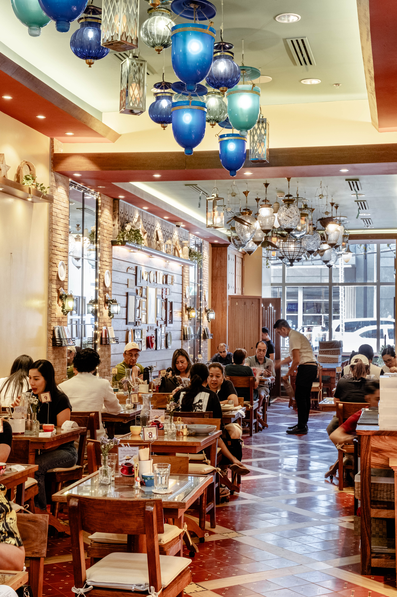
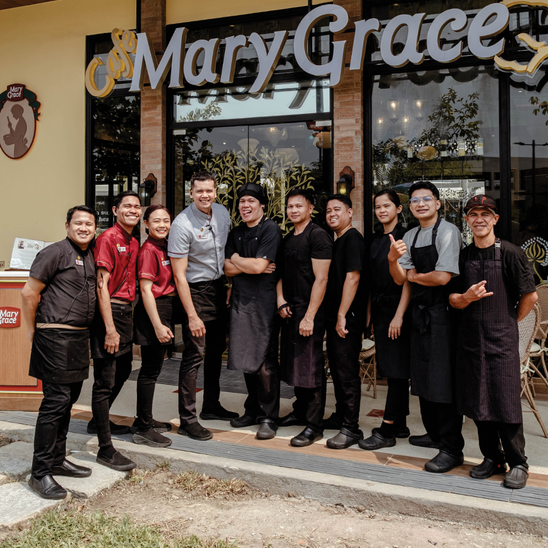

About Mary Grace Coffee
A cozy neighborhood café inspired by homemade baking, warm conversations, and slow, unhurried mornings.
Our Story
What started as a small home kitchen grew into a welcoming space where friends, families, and students can enjoy freshly baked ensaymadas, hot chocolate, and comfort food. Every cup and every pastry is prepared with care so guests feel at home the moment they walk in.
What We Serve
Our menu focuses on classic favorites: cheesy breads, sweet rolls, and rich chocolate drinks. We keep our servings simple and familiar so that anyone can find a favorite, whether they are grabbing a quick merienda or staying longer to relax.
Visit Us
Mary Grace Coffee is designed to be a quiet and relaxing place to study, meet friends, or spend time with family. Soft lighting, warm colors, and the smell of freshly brewed coffee welcome guests throughout the day.


